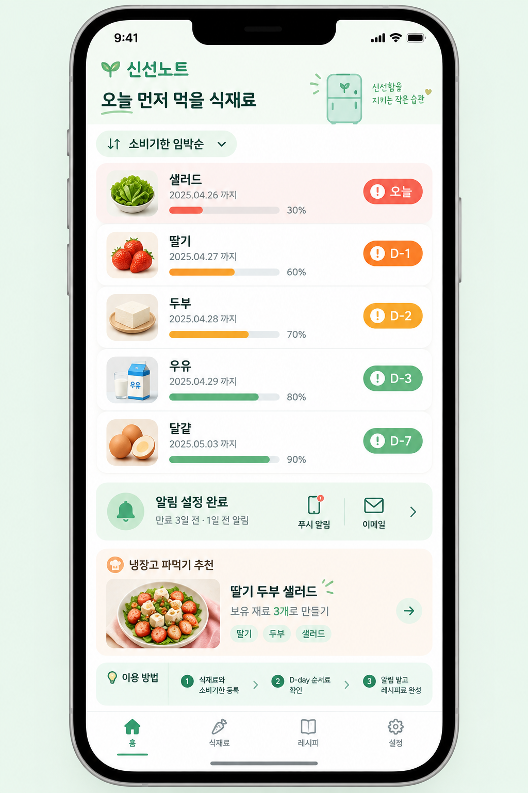

서비스 소개
버려지는 음식 없이 신선하게 관리하는 일상
혼자 살다 보면 냉장고 깊숙이 넣어둔 식재료를 잊어버려 버리게 되는 일이 잦습니다. 신선노트는 등록한 식재료의 남은 기한을 보기 쉽게 정리하고 제때 소비할 수 있도록 안내합니다.

주요 기능
소비기한 D-day 정렬
임박한 날짜 순서대로 식재료를 정렬하여 무엇을 먼저 먹어야 하는지 한눈에 보여줍니다.
예시: 두부 D-1 → 우유 D-3 → 당근 D-5 순서로 확인하고 먼저 소비하세요.
소비기한 만료 전 리마인드
기한 만료 3일 전과 1일 전에 알림을 받아 식재료를 잊지 않도록 돕는 기능입니다.
아래 ‘식재료 알림 미리보기’에서 안내 문구를 체험해 보세요. 실제 알림은 발송되지 않습니다.
냉장고 파먹기 레시피 매칭
기한이 얼마 남지 않은 재료들을 조합해 만들 수 있는 간단한 한 끼를 제안하는 기능입니다.
예시: 두부와 당근이 남았다면 두부 채소볶음으로 활용해 보세요.
이용 방법
- 구입한 식재료 이름과 소비기한을 간편하게 등록합니다.
- 메인 화면에서 디데이 순으로 정리된 보관 목록을 확인합니다.
- 만료 전 알림을 받고 추천 레시피로 남김없이 식사를 완성합니다.
식재료 알림 미리보기
식재료 이름과 알림 옵션을 선택해 안내 문구를 확인해 보세요. 화면 시연용이며 실제 알림은 예약되지 않습니다.
0 / 10자 · 식재료 이름을 입력해 주세요.